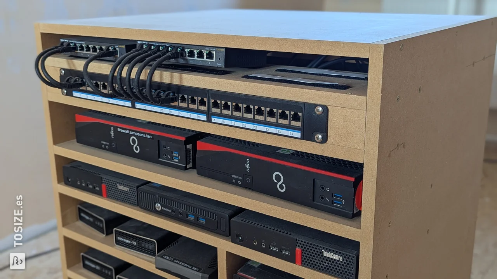

Presentación
Hola, soy David Polo. Soy estudiante de Ingeniería de Software. Me interesa continuar fortaleciendo mis conocimientos de computación y aprender los temas desde sus fundamentos.
Formación e intereses académicos
Soy estudiante de bachiller de ciencias, gruaduado en la escuela de la Academia Cristiana Doulos. Curso la carrera de lic. en Ingenieria de Software en la Universidad Teconologica de Panama, en mi tiempo hasta mi tercer año e aprendido muchas cosas sobre el proceso de creacion de un software desde la etapa en la que todavia es un concepto.
Hobbies e intereses personales
- Jugar videojuegos
- Ver videos
- Estudiar sobre Homelabbing y herramientas de hosting
